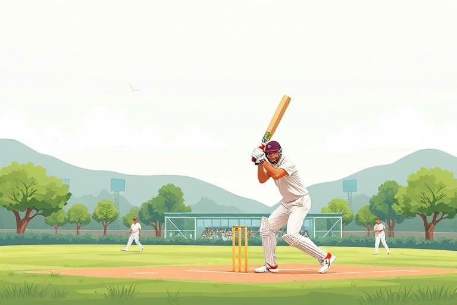

ক্রিকেটে হাতেখড়ি: নতুনদের জন্য খেলার নিয়ম ও দক্ষতা অর্জনের সহজ নির্দেশিকা
Category: cricket | Language: bn
ক্রিকেট ভারতের শুধু একটি জনপ্রিয় খেলা নয়, এটি একটি আবেগের নাম। আপনি যদি একদম নতুনভাবে এই খেলাটি শুরু করতে চান, তবে প্রথমেই এর জটিল নিয়মগুলো সহজভাবে বোঝা প্রয়োজন। এই নিবন্ধটি মূলত সেই সব নতুন খেলোয়াড়দের জন্য তৈরি করা হয়েছে যারা মাঠের প্রাথমিক নিয়ম, প্রয়োজনীয় সরঞ্জাম এবং ব্যাটিং-বোলিংয়ের কিছু মৌলিক দক্ষতা শিখতে চান। ক্রিকেট একটি দলগত খেলা যেখানে শারীরিক সক্ষমতার পাশাপাশি মানসিক কৌশল সমানভাবে গুরুত্বপূর্ণ। সঠিক নির্দেশিকা মেনে চললে একজন শিক্ষানবিশ খুব দ্রুত এই খেলার আনন্দ উপভোগ করতে পারেন এবং নিজের খেলার মান উন্নত করতে পারেন।
ক্রিকেটের মূল লক্ষ্য হলো বিপক্ষ দলের চেয়ে বেশি রান সংগ্রহ করা। সাধারণত দুটি দল ১১ জন করে খেলোয়াড় নিয়ে মাঠে নামে। টস জেতার পর একটি দল ব্যাটিং করার সিদ্ধান্ত নেয় এবং অন্য দলটি ফিল্ডিং ও বোলিং করে। বর্তমানে তিনটি প্রধান ফরম্যাটে খেলা হয়: টি-টোয়েন্টি (২০ ওভার), একদিনের আন্তর্জাতিক বা ওডিআই (৫০ ওভার) এবং টেস্ট ম্যাচ (৫ দিন ব্যাপী)। নতুনদের জন্য টি-টোয়েন্টি বা সীমিত ওভারের স্থানীয় ম্যাচ দিয়ে শুরু করা ভালো কারণ এতে খেলার গতি বেশি থাকে এবং মৌলিক নিয়মগুলো দ্রুত আয়ত্ত করা যায়। মাঠের মাঝখানে ২২ গজের একটি পিচ থাকে, যেখানে ব্যাটার এবং বোলারের মূল লড়াই চলে।
খেলার শুরুতে সঠিক সরঞ্জাম নির্বাচন করা অত্যন্ত গুরুত্বপূর্ণ। আপনার প্রয়োজন হবে একটি ভালো মানের উইলো কাঠের ব্যাট, একটি শক্ত লেদার বা টেনিস বল এবং তিনটি স্টাম্প। যেহেতু ক্রিকেট একটি শক্ত বলের খেলা, তাই নিরাপত্তার জন্য হেলমেট, প্যাডিং (পায়ের জন্য), গ্লাভস এবং অ্যাবডোমেন গার্ড ব্যবহার করা বাধ্যতামূলক। ভারতে একটি প্রাথমিক ক্রিকেট কিট কিনতে সাধারণত ৫,০০০ থেকে ১০,০০০ টাকা খরচ হতে পারে, তবে একদম শুরুতে আপনি পাড়ার মাঠে টেনিস বল এবং হালকা ওজনের ব্যাট দিয়ে অনুশীলন শুরু করতে পারেন। মনে রাখবেন, নিম্নমানের সরঞ্জাম ব্যবহারে চোট পাওয়ার ঝুঁকি থাকে, তাই সুরক্ষার বিষয়ে কোনো আপস করবেন না।
ব্যাটিংয়ের প্রথম ধাপ হলো সঠিক 'গ্রিপ' বা ব্যাট ধরার পদ্ধতি শেখা। আপনার দুই হাতের তালু দিয়ে ব্যাটের হাতলে একটি 'V' আকৃতি তৈরি করতে হবে যাতে ব্যাটের ওপর নিয়ন্ত্রণ থাকে। এরপর আসে 'স্ট্যান্স' বা দাঁড়ানোর ভঙ্গি। পা দুটি কাঁধ বরাবর চওড়া করে পিচের ওপর আরামদায়কভাবে দাঁড়ান এবং আপনার নজর যেন সবসময় বোলারের হাতের দিকে থাকে। একজন নতুন ব্যাটারের উচিত শুরুতে বড় শট বা ছক্কা মারার চেষ্টা না করে বলের লাইনে এসে রক্ষণাত্মকভাবে খেলা বা 'ডিফেন্স' করা শেখা। বলের গতির সাথে ব্যাটের সঠিক সংযোগ ঘটানোই হলো সফল ব্যাটিংয়ের চাবিকাঠি।
বোলিং করার সময় সবচেয়ে গুরুত্বপূর্ণ নিয়ম হলো আপনার হাত যেন কনুই থেকে ১৫ ডিগ্রির বেশি ভাঁজ না হয়; একে 'চাকিং' বলা হয় এবং এটি ক্রিকেটে অবৈধ। একজন ফাস্ট বোলার হওয়ার জন্য আপনার একটি ছন্দময় রান-আপ এবং বল ছাড়ার সময় শরীরের ভারসাম্য প্রয়োজন। অন্যদিকে, স্পিন বোলার হতে চাইলে আঙুল বা কবজির মোচড় ব্যবহার করে বলকে পিচে ঘোরানোর কৌশল রপ্ত করতে হবে। নতুনদের জন্য পরামর্শ হলো, শুরুতে গতি বাড়ানোর চেয়ে বলটি স্টাম্পের সঠিক লাইনে এবং সঠিক লেন্থে (যেখানে বল ড্রপ খাবে) ফেলার দিকে বেশি নজর দেওয়া। নিয়মিত অনুশীলনে বলের ওপর নিয়ন্ত্রণ বাড়ে এবং নিখুঁত লাইন-লেন্থ বজায় রাখা সম্ভব হয়।
ফিল্ডিং হলো এমন একটি বিভাগ যেখানে আপনি রান বাঁচিয়ে বা ক্যাচ নিয়ে একাই দলকে জেতাতে পারেন। ক্যাচ ধরার সময় হাতের তালু দুটিকে একসাথে রেখে একটি 'কাপ' বা বাটির মতো আকৃতি তৈরি করুন এবং বল হাতে আসার সময় হাতটি সামান্য পেছনের দিকে টেনে নিন, যাকে 'সফট হ্যান্ডস' বলা হয়। এতে বল ছিটকে যাওয়ার সম্ভাবনা কমে এবং হাতে আঘাত লাগে না। উইকেটকিপারকে সবসময় উইকেটের পেছনে সতর্ক থাকতে হয় এবং বোলারের প্রতিটি ডেলিভারির দিকে তীক্ষ্ণ নজর রাখতে হয়। মাঠে ফিল্ডিং করার সময় দ্রুত দৌড়ানো এবং সঠিক নিশানায় স্টাম্প লক্ষ্য করে বল থ্রো করা একজন ভালো ফিল্ডারের প্রধান গুণ।
একটি বাস্তব উদাহরণ দিয়ে বিষয়টি বোঝা যাক। ধরুন একজন বোলার টানা ৬টি বল করছেন, যাকে একটি 'ওভার' বলা হয়। ব্যাটার যদি বলটি মেরে সীমানার বাইরে পাঠান তবে তিনি ৪ বা ৬ রান পাবেন। আবার যদি বলটি সরাসরি উইকেটে লাগে বা ব্যাটারের শট কোনো ফিল্ডার সরাসরি লুফে নেন, তবে ব্যাটার 'আউট' হয়ে যাবেন। এলবিডব্লিউ (LBW) বা লেগ বিফোর উইকেট হলো আউটের একটি গুরুত্বপূর্ণ নিয়ম; যদি বল ব্যাটারের পায়ে লাগে এবং আম্পায়ার মনে করেন বলটি ব্যাটে না লাগলে স্টাম্পে লাগত, তবে ব্যাটারকে আউট দেওয়া হয়। এই ছোট ছোট নিয়মগুলো খেলার সময় বাস্তব পরিস্থিতির সাথে মিলিয়ে দেখলে বোঝা অনেক সহজ হয়।
নতুনরা প্রায়ই একটি সাধারণ ভুল করেন—বলের দিকে নজর না রেখেই ব্যাট ঘোরানো, যা দ্রুত আউট হওয়ার প্রধান কারণ। এছাড়া বোলিংয়ের সময় অতিরিক্ত বল করার ফলে পেশিতে চোট পাওয়ার ঝুঁকি থাকে। সবসময় মনে রাখবেন, ক্রিকেট একটি উচ্চ শারীরিক পরিশ্রমের খেলা, তাই খেলার আগে অন্তত ১৫ মিনিট ওয়ার্ম-আপ করা এবং সঠিক সুরক্ষা সরঞ্জাম পরা একান্ত প্রয়োজন। কোনো অপরিচিত অনলাইন অ্যাপে ক্রিকেটে বাজি ধরা বা টাকা বিনিয়োগ করা থেকে বিরত থাকুন, কারণ এটি প্রতারণার কারণ হতে পারে। আপনার পরবর্তী পদক্ষেপ হওয়া উচিত কাছাকাছি কোনো স্থানীয় ক্রিকেট ক্লাবে বা কোচিং সেন্টারে ভর্তি হওয়া। ধৈর্য এবং নিয়মিত অনুশীলনের মাধ্যমেই আপনি ধাপে ধাপে একজন দক্ষ ক্রিকেটার হয়ে উঠতে পারবেন।